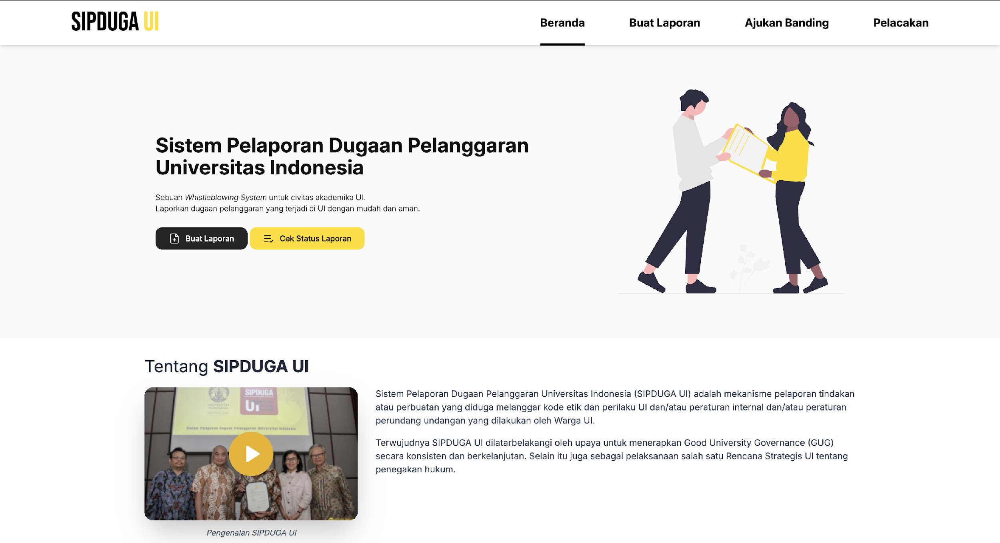

Example of anti-corruption and integrity system at Universitas Indonesia is available on this link: https://sipduga.ui.ac.id/
| Anti-Corruption and Integrity System Reference Portal |
|---|
|
 Example of anti-corruption and integrity system portal (Universitas Indonesia, Indonesia)
|